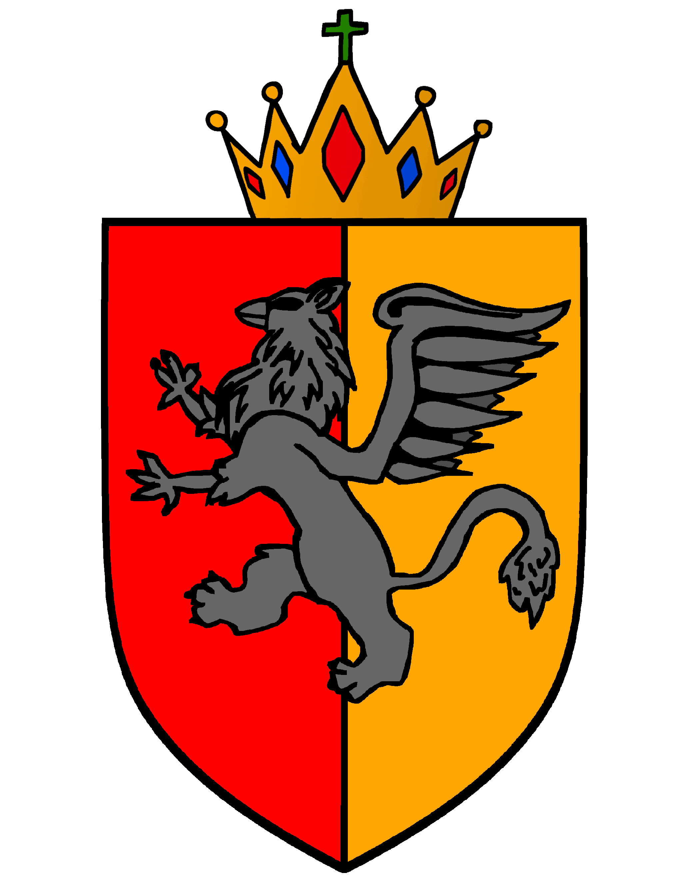

Krulewski Dziennik Ustaw
Urzędowy publikator aktów prawa powszechnego obowiązującego w Krulestwie Multikont
Krulewski Dziennik Ustaw jest wyłącznym oficjalnym organem promulgacyjnym aktów prawa powszechnie obowiązującego w Koronie Krulestwa Multikont. Krulewski Dziennik Ustaw jest wydawany wyłącznie w formie elektronicznej w systemie rocznym (art. 2 ust. 2 oraz art. 5 ust. 1 Dekretu z 16.09.2026 r. o publikatorach koronnych - Kr. Dz. U. z 2026 r. poz. 50).
Organ nadzorujący i publikujący: Pałac Krula Multikont
Uwagi techniczne (najedź na etykietę w tabeli w celu uzyskania źródła zmian):
Obowiązujący – aktualna treść obowiązującego aktu
Akt utracił moc – akt nie obowiązuje
Znowelizowany – akt obowiązuje w nowszej wersji
Akt jednorazowy – akt wywołał jednorazowy efekt